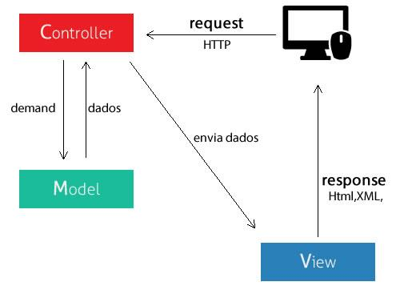

O que é Laravel?
Laravel é um framework PHP livre e open-source criado por Taylor B. Otwell para o desenvolvimento de sistemas web que utilizam o padrão MVC (model, view, controller). Algumas características proeminentes do Laravel são sua sintaxe simples e concisa, um sistema modular com gerenciador de dependencias dedicado, várias formas de acesso a banco de dados relacionais e vários utilitários indispensáveis no auxílio ao desenvolvimento e manutenção de sistemas.
O que é MVC?
MVC é nada mais que um padrão de arquitetura de software, separando sua aplicação em 3 camadas. A camada de interação do usuário(view), a camada de manipulação dos dados(model) e a camada de controle(controller).Model
Sempre que você pensar em manipulação de dados, pense em model. Ele é responsável pela leitura e escrita de dados, e também de suas validações.View
Simples: a camada de interação com o usuário. Ela apenas faz a exibição dos dados, sendo ela por meio de um html ou xml.Controller
O responsável por receber todas as requisições do usuário. Seus métodos chamados actions são responsáveis por uma página, controlando qual model usar e qual view será mostrado ao usuário.